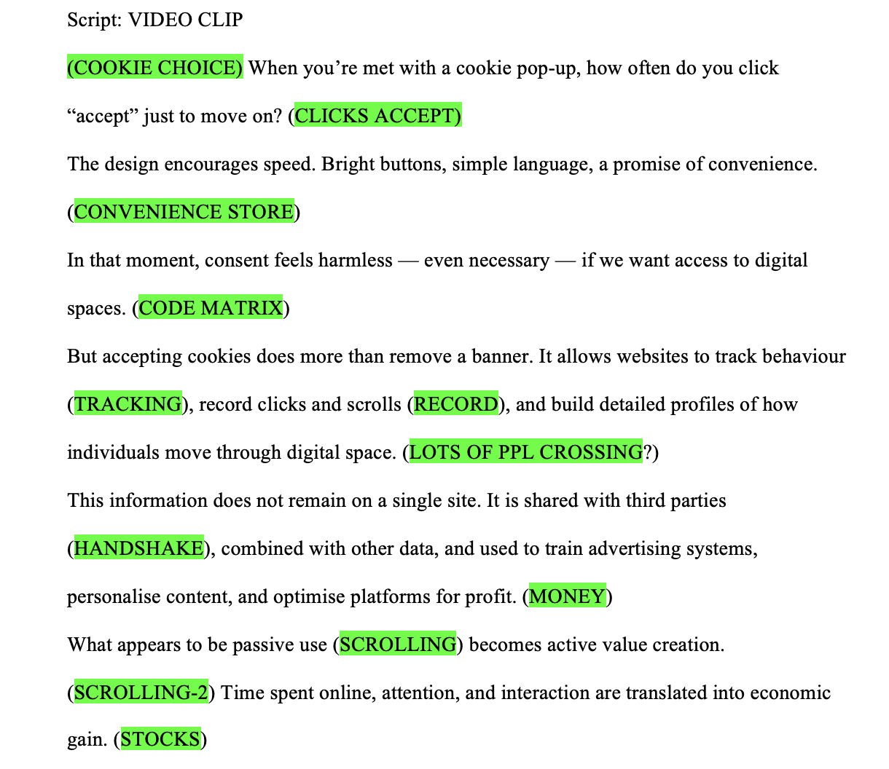
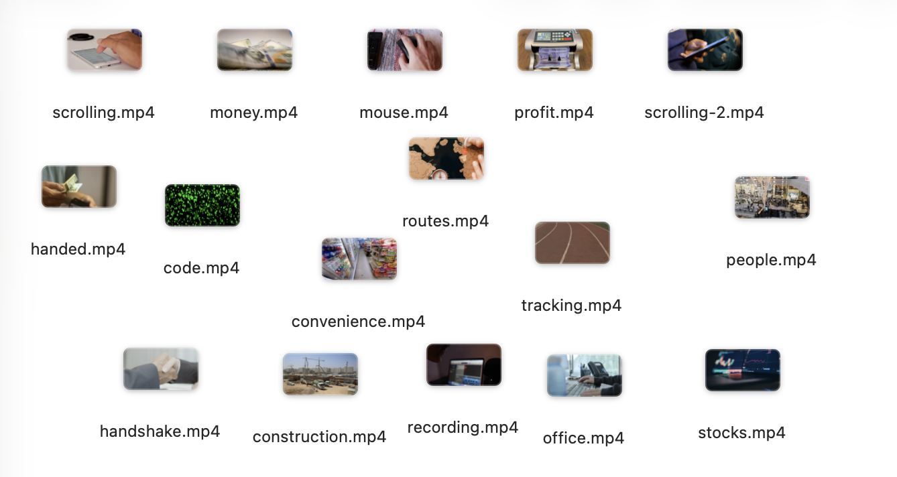

Visuals
In my video essay, I used specific visual clips to represent key words and ideas from my script, helping to make abstract concepts more solidified and engaging for potential viewers. For example, simple actions like clicking “accept” are paired with clear, literal visuals to reflect ease and speed, reinforcing how effortless cookie consent can feel in the moment. As the script develops, the visuals become more symbolic—such as tracking, data recording, and the movement of people, to represent how user behaviour is monitored and later transformed into data.
I also used imagery like handshakes and cash counting to suggest the exchange and commercialisation of personal information, highlighting the underlying processes behind popular digital platforms. By aligning each keyword with a relevant visual, I aimed to guide the viewer’s understanding while maintaining a clear connection between my narration and the imagery. This approach helped to emphasise how everyday online actions are not passive but are part of a larger system of data collection and profit generation, with no reward given to us as users.
This combination of literal and symbolic imagery allowed me to communicate both the surface simplicity and the hidden transformation of digital usage into marketing profits.


References
Title image available at: https://unsplash.com/photos/black-imac-apple-magic-keyboard-and-apple-magic-mouse-l82NzBSYbj0
Video Material:
Close-up view of a person using a mouse
Indian rupee money counting machine in action
Hand scrolling cellphone screen
Green glowing dots on a black background
Man buying drinks at a convenience store